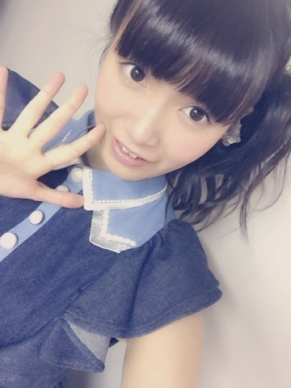
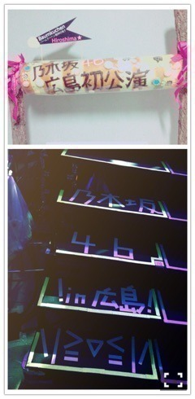
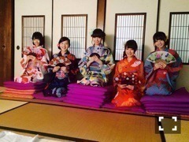

| 2015/08 17 Mon | ひめたん-0o0-その566 |
広島公演終わりました！！
みんなを連れて初凱旋ライブ。
最高でした！
私が乃木坂にいる間に達成したかった
夢が4年越しに叶いました！
みなさんのおかげです
素敵な景色を本当にありがとうございました
忘れられない2日間になりました！

ヘアは
1公演目 編み込みツイン
2公演目 編み込みまきおろしお花
3公演目 編み込みサイドポニー
初日は、ツインテールのくだり
ちゃんと言えた＼(^o^)／
らじらーありがとう＼(^o^)／
そして、16日に来てくださった方は
お聞き苦しい声で
ごめんなさい( ´•̥ω•̥` )
実は広島に帰る前から
喉に違和感はあったのですが
16日はもうボロボロで( ´•̥ω•̥` )
お仕事だからちゃんとしなきゃなのに......
病院で診てもらったら
大したことなかったので心配しないでね
なるべく早く治すね～
広島会場、スタッフさんの
粋な計らいにほっこりしました(＊´ω`＊)

舞台裏で一緒に
ウォーミングアップしてたり
なんだかアットホームな現場でした
そうそう、広島県民は
優しくてフレンドリーな人が多いんだねって
メンバーのみんなが言ってくれたよ！
そうなのかな(´,,•ω•,,｀)
広島公演でサプライズがありましたが
8月19日から広島ホームテレビさんで
乃木坂工事中のオンエアが
スタートします！！ありがたい！
#15 中田回からです！
これでさらに
広島県民と乃木坂ちゃんの距離が
近づくんじゃないかな＼(^o^)／
広島のみんなにさらに
乃木坂ちゃんのこと好きになってもらいたい
そして来年もまた帰ってきたい！！
ということでツアーも気づけば折り返し。
私たちの夏はツアーと共に
終わっていくんだなあって感じます
ここまでも駆け抜けてきたもんね
19歳の夏、最後まで
素敵な思い出たくさん作りましょーう
次は今週末福岡公演＼(^o^)／
福岡はツアーで3年連続帰っています
美味しいものたくさん！楽しみ！

広島＼(^o^)／好きじゃ～
2人でみんなに方言指導もしました～
らじらー！サンデーでは
ツアーの感想、報告メール
お待ちしておりますo(^▽^)o
ここまで3会場8公演やりました
仙台、名古屋、広島に参加された方
ぜひ送ってくださーい♡
広島はミッションもあったもんね
果たして届いたんでしょうか......？
宛先はこちらまで。
あ、らじらーから
素敵なお花届いてました(´,,•ω•,,｀)♡
しまった。
枚数制限があるから
広島会場限定Tシャツの画像が
貼れないではないか......
次回貼るね( ´•̥ω•̥` )
舞台「じょしらく」
映画「超能力研究部の3人」
huluで配信決定！
私たちチームごは
9月15日前編、9月22日後編
に配信されます～＊

じょしらくロスだったみなさん
お待たせしました！
主題歌未だに歌えるもんね～
みんなでSay～♪

 ひめたんは思い出に残ってる
ひめたんは思い出に残ってる
給食のメニューってある？
給食のクリームシチューって
なんであんなに美味しいんだろうね？
夏はピーマンがよく出てきた( ´ ･ω･ ` )
ひめたんは、お好み定食
食べた事ありますか？
お好み焼きがおかずで
ごはんがついてきてってことだよね。
広島はお好み焼きにそばが入ってるから
お米なくても十分なんだよね
関西のはお米と一緒に食べるんかな？
ひめたんテレカって使ったことある？
ありますよ！小学生のとき！
今夜はNOGIBINGO!5
みてくださーい＼(^o^)／
みんなが天使みたいな顔で寝てるよ♡
いくちゃんの謎ポーズ。
ひめはいくちゃんとのペアなんですが
いつも通りな感じで
収録したような気がする(´｡•ω•｡`)
覚えてるような覚えてないような(´｡•ω•｡`)
それくらいみんな
リラックスした収録でした～ゆるゆる～
(＊´・ω・＊)
コメント(805)
2015/08/17 23:45